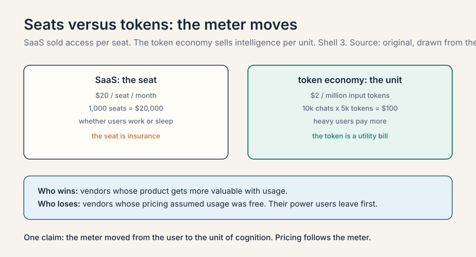
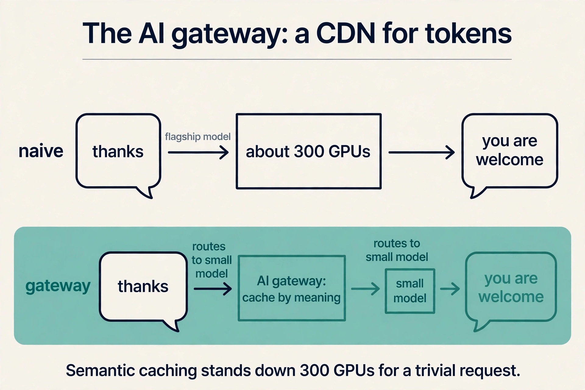
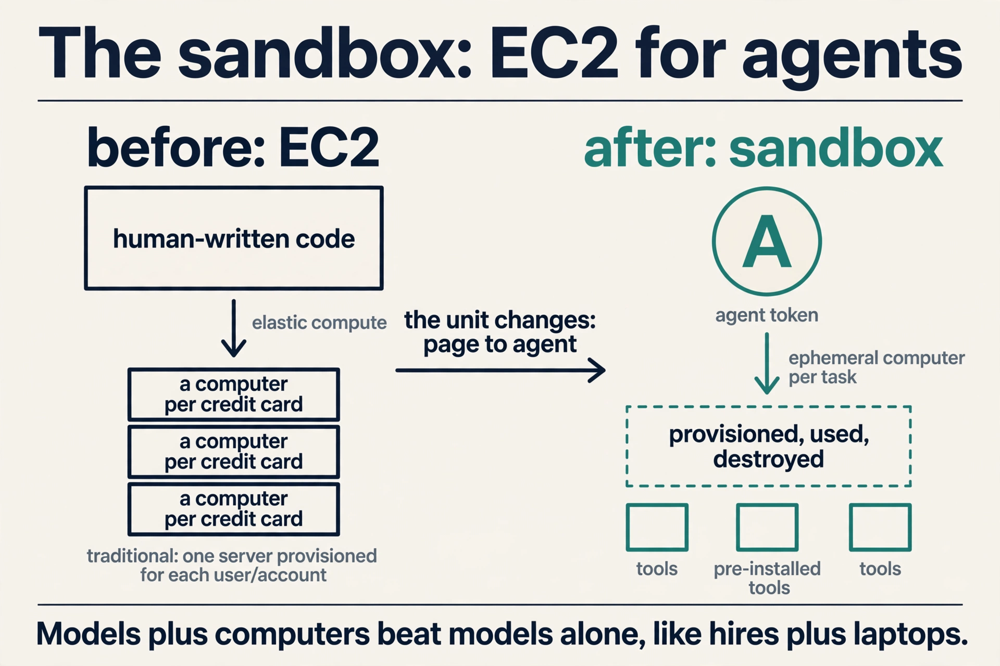
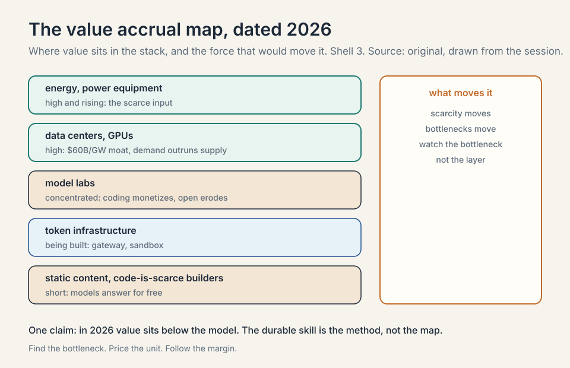

Lecture 6: Where Value Accrues
Video blocked (ad-blocker or local file mode).
Watch on YouTubeVideo not loading? Watch on YouTube
Guest: Guillermo Rauch, Founder and CEO of Vercel. This lesson covers the second half: value accrual, the token economy, and long/short picks.
The course’s core question
Every session of MS&E435 circles one question, and the host asks it directly in this one: from chips to data centers to infrastructure below the model, the model, and the agents above it, where will value accrue?
Rauch’s answer is dated and specific: “at least in 2026, right this second,” value concentrates below the model. Chips, data centers, power, cooling, energy. Above the model there is real value, in coding models, customer support, legal, and other verticals, but it is narrow and concentrated. The money is in the picks and shovels.
This chapter is the map of that answer: why the value sits where it does, the new primitives being built to capture it, and how the guests say to bet.
Why below the model wins (for now)
Three forces push value down the stack, and each one has a number from the course.
Subchapter: the CapEx is the moat, worked
L02 priced it: $60M per MW, $60B per gigawatt. Capital at that scale is its own barrier. Few players can finance AI factories, so the returns concentrate among those who can. By October 2026 the moat had a financing wall behind it: the five hyperscalers’ projected capex of about $800B exceeds their combined operating cash flow of about $707B. The buildout is 113 percent self-unfunded. The moat is now also a balance-sheet contest.
Subchapter: demand outruns supply, with 2026 numbers
The Applied Compute session named compute scarcity outright: demand far outpacing supply. By 2026 the numbers filled in. Amazon guided roughly $200-220B of capex, Alphabet $195-205B, Meta $115-135B, Microsoft about $175B. Google Cloud crossed $20B a quarter with $460B of backlog. Scarcity prices flow to the scarce input. Today that input is energized compute, not model weights.
Subchapter: models commoditize faster than concrete
The Crusoe session’s long/short said it plainly: old compute commoditizes, but so do old models, and open source takes share from closed-source model players. The September 2026 price war is the exhibit: OpenAI and Anthropic cut frontier prices within ninety minutes of each other, DeepSeek sells flash intelligence at $0.30/$1.20, and the effective enterprise token price fell 41 percent in six months. A data center’s revenue can be repriced per token for a decade. A model’s pricing power erodes with every open release.
The honest qualifier is the date. “In 2026” is doing real work in Rauch’s sentence. Value accrual moves as bottlenecks move, and L01 showed bottlenecks always move.
Tokens: the new commodity
The unit of the new economy is the token: a chunk of text the model reads or writes, roughly a word or part of one. Rauch’s framing: Vercel used to stream pixels to users. Now it streams intelligence in the form of tokens. Tokens are, in his phrase, “the new hot commodity.”
Subchapter: the seat-to-token arithmetic, worked
This changes the pricing model of software. SaaS sold seats: a fixed price per user per month. Toy it: $20 per seat per month, 1,000 seats, $20,000 a month whether the users work or sleep. The token economy sells intelligence by the unit: $2 per million input tokens. A support agent that handles 10,000 conversations a month at 5,000 tokens each burns 50M tokens: $100 of input. The meter moved from the user to the unit of cognition. Heavy users pay more. Light users pay less. The seat was insurance. The token is a utility bill.

Subchapter: what is used where, the October 2026 price ladder
The death of the seat and the rise of the token is the same event as L05’s SaaS reckoning, priced. The October 2026 ladder, standard tiers, short context, from vendor pricing pages:
| Model | Input $/1M | Output $/1M |
|---|---|---|
| OpenAI GPT-6 Luna | $0.10 | $0.50 |
| DeepSeek V4.1 Flash | $0.30 | $1.20 |
| Google Gemini 3.8 Flash (promo) | $0.75 | $3.75 |
| Anthropic Claude Haiku 4.5 | $1 | $5 |
| Anthropic Claude Sonnet 5.5 | $2 | $10 |
| OpenAI GPT-6 Sol | $2 | $10 |
| Google Gemini 4 Argon (intro) | $2 | $10 |
| xAI Grok 4.7 | $2 | $6 |
| Anthropic Claude Opus 5.5 | $4 | $20 |
| OpenAI GPT-6 Astra | $10 | $50 |
| Anthropic Claude Fable 5.1 | $10 | $50 |
The spread is a hundredfold, $0.50 to $50 on output. Three facts to read off it. First, frontier-class intelligence fell to $2 per million input tokens across all three major labs in the same week of September 2026. Second, every lab discounts: batch APIs cut 50 percent, prompt caching cuts cached tokens 10x, DeepSeek halves prices off-peak. Third, the list price is the ceiling. the gateway of this chapter exists to make sure nobody pays it.
The AI gateway: a CDN for tokens
Every new commodity needs infrastructure, and the session builds it by analogy. In the first internet, pages needed CDNs (content delivery networks): companies like Akamai and Fastly that scaled, accelerated, and secured the delivery of pixels.
Subchapter: the analogy, worked
Tokens need the same treatment. Rauch’s AI gateway is “a CDN for tokens”: a layer in front of the model providers that observes token traffic, fails over between providers, secures it, accelerates it, caches it, and load-balances it. Toy it: a request arrives. The gateway checks its cache by meaning, picks the cheapest capable model, and only calls the flagship if the task demands it. The pixel CDN did this for images in 1998. The token CDN does it for cognition in 2026.
Subchapter: semantic caching, worked
The worked example is the session’s most memorable piece of arithmetic. Saying “thanks” to a flagship model activates something like 300 GPUs to produce “you are welcome.” A smart gateway sees the request, recognizes it needs no frontier intelligence, and routes it to a small model behind the scenes. That is semantic caching: caching by meaning, not by exact text. The 300 GPUs stand down. The margin is the difference between flagship cost and small-model cost, captured on every trivial request at planetary scale. Toy the savings: 1M “thanks”-class requests a day at $50/M flagship output versus $0.50/M small-model output. The gateway keeps the difference.

Subchapter: the 95 percent reuse
Rauch notes the product reuses about 95 percent of Vercel’s existing CDN machinery: the same rocket engine, new fuel. That reuse is itself an economic point about why incumbents of the pixel CDN era have a head start in the token CDN era. Points of presence, failover logic, caching layers, abuse handling: the hard problems are the same. Only the commodity changed.
The sandbox: EC2 for agents
The second primitive is compute. EC2 taught the world elastic compute: a computer per credit card, scalable to a million machines. But EC2 was designed for human-written code.
Subchapter: the Docker precedent, worked
Agents need their own unit. Rauch’s sandbox is, in his words, the EC2 of agents: an ephemeral computer handed to an agent to work in. The mechanism has a striking precedent. In post-training, models are handed Docker containers with broad permissions: they cut their teeth inside mini-computers before facing the world. Giving a model a computer extracts more capability from it, the way giving a new hire a laptop extracts more from the hire. IT pre-installs software for the human. The sandbox pre-provisions tools for the agent.
Subchapter: the economics
The economics follow. Vercel’s sandbox reuses the same virtualization primitive as every deployment on the platform, which is why, Rauch says, almost nothing broke during the deployment surge: the company 3x’d in months and doubled daily deployments since January on machinery it already operated. Marginal cost of one more sandbox: near zero. Marginal value of one more agent running inside it: whatever the agent produces.
Subchapter: the security category
And the security corollary: like the PC revolution brought viruses and phishing, agents bring exfiltration and leakage, so sandbox security is a product category being born in real time. Every new sandbox is a new computer on the network, and every new computer is an attack surface. Isolation, permissions, and monitoring are the product.

The block economy: why agents picked Vercel
The host presses on the session’s most startling statistic: in a test of 86 agent runs, Claude chose Vercel’s deployment option 86 out of 86 times, and the report the guest cites gives Vercel’s UI engine a 90.1 percent “near monopoly.” Was it a deal? Rauch will not confirm or deny commercial arrangements, but his substantive answer is a theory of agent choice.
Subchapter: local reasoning, worked
Agents reuse what they know. Models trained on the internet’s code learned Next.js, React, and the open-source stack deeply. But there is a deeper mechanism: local reasoning. Rauch’s example is Tailwind, the CSS framework he bet on early despite its ugly-looking code. Tailwind lets a developer reason about one component in isolation: it works the same wherever it is placed. Toy it: a component with local reasoning needs only its own 200 tokens of context to modify. A component with global coupling needs the whole 50,000-token file. Inside a finite context window (about a million tokens: not nearly enough to hold all of humanity’s code), the agent always picks the block it can reason about locally.
Subchapter: the 86 out of 86
That property, shared by React and Next.js, is what makes code composable for agents. The agent cannot swallow the world, so it assembles blocks. The 86-out-of-86 result is agents voting for the blocks they know: the stack most represented in the training data, with the best local-reasoning properties, wins every run.
Subchapter: agentic ergonomics, the rule
Mitchell Hashimoto, the HashiCorp founder who joined Vercel’s board, calls this the block economy: the market for building blocks agents can snap together. Rauch’s strategic moral: if you want Claude Code or Codex to choose your technology, build blocks with agentic ergonomics. Open infrastructure wins because agents need a target to throw code at. The rule for builders: minimize the tokens an agent needs to use your block correctly.
How to bet: the long/short
Both guest sessions end with long/short picks, and together they are the course’s investment summary.

Subchapter: Rauch’s long, worked
Rauch’s long: anyone “moving at the speed of tokens.” Concretely: companies with consumption-based pricing, instant signup, and agent-ready interfaces (MCP, CLIs, APIs). Toy the test: a company charges $20/seat/month with a sales-led signup. An agent cannot buy it, cannot try it, cannot meter it. It is invisible to the token economy. The long is the company the agent can transact with in one call.
Subchapter: the rate-limiter provocation
His provocation to his own company: “no more rate limits.” Rate limiters encode guesses about maximum demand (“no company will deploy more than 100 times per minute”), and in the agent era those guesses keep being wrong. A YC company that did not exist three months earlier now produces deployment volumes that surprise Vercel itself.
Subchapter: Rauch’s short
Rauch’s short: static data and content businesses (his early call: Stack Overflow, a database of programming Q&A, against free model answers). companies built on the premise that code is scarce or hard to produce (drag-and-drop builders, “coding with training wheels,” which he calls patronizing). and companies that do not open up, the e-brochure enterprises where agents cannot reach the raw signal.
Subchapter: Lochmiller’s long/short
Lochmiller’s long/short (from the Crusoe session): long the buildout, with the bear case aimed at the legacy electrical stack (Eaton, Schneider): fine near-term, at risk long-term if power electronics and solid-state transformers collapse their costs. And open source taking share from closed-source model players.
Subchapter: the October 2026 update to the bets
The through-line: bet on the layers where demand is growing faster than supply can respond, and against the layers where AI turns a scarce asset (code, answers, interfaces) into a commodity. October 2026 added three data points. Anthropic’s enterprise lead vindicates the “above the model, narrow and concentrated” call: coding models monetize. The September price war vindicates the commoditization call: frontier tokens fell to $2/M input across all three labs. Meta’s pivot from open Llama to closed Muse Spark vindicates the open-source-takes-share risk running in reverse: even the open champion went closed at the frontier.
The method: find the bottleneck, price the unit, follow the margin
The chapter’s price is the one Rauch states himself: the map is dated 2026. Value accrues below the model right this second because that is where scarcity sits. Scarcity moves. If compute supply catches demand, if open models commoditize the gateway layer, if agents learn to route around today’s primitives, the map redraws. The durable skill the course teaches is not the 2026 answer but the method: find the bottleneck, price the unit, follow the margin. That method is the whole course in one line.
Subchapter: the method as an interview framework
Use it as a three-step answer to any “where does value accrue” question. Step one: name the bottleneck in this market, with a number. Step two: price the unit that the bottleneck gates, in dollars. Step three: follow the margin to whoever collects it, and name what would move it. The interviewer is not testing your 2026 map. They are testing whether you can redraw it when the bottleneck moves.
In 2026, below the model: chips, data centers, power, cooling, energy. Three reasons. The CapEx is the moat: $60B per gigawatt admits few players, and the 2026 buildout now exceeds the hyperscalers’ combined operating cash flow. Demand outruns supply: compute scarcity is the stated fact of the era, with Google Cloud holding $460B of backlog. And models commoditize faster than concrete: open source erodes closed-model pricing while a data center reprices per token for a decade. Above the model, value exists but is narrow: coding models, support, legal. Scarcity moving. If energized compute stops being the bottleneck, pricing power flows to whoever owns the customer relationship or the proprietary data. The specialization layer of L04 is the candidate: enterprise evals and telemetry cannot be commoditized by open weights. Watch the bottleneck, not the layer.
SaaS sold seats: $20 per seat per month, 1,000 seats, $20,000 a month whether users work or sleep. The token economy sells intelligence by the unit. A support agent handling 10,000 conversations a month at 5,000 tokens each burns 50M input tokens. At $2 per million, that is $100 of input. The meter moved from the user to the unit of cognition. Heavy users pay more, light users pay less. The seat was insurance against usage. The token is a utility bill for it. Winners: vendors whose product gets more valuable with more usage, because the meter now rewards it. Losers: vendors whose pricing assumed usage was free to the customer. The losers’ customers discover they were subsidizing the power users, and the power users leave first.
The AI gateway is a CDN for tokens: it observes, fails over, secures, accelerates, caches, and load-balances traffic to model providers, the way Akamai did for pixels. Semantic caching is its sharpest trick: cache by meaning, not exact text. Saying “thanks” to a flagship model can activate around 300 GPUs to write “you are welcome.” The gateway routes that to a small model instead. The margin is the cost difference, captured on every trivial request at scale. Reuse. Rauch says the gateway reuses about 95 percent of the CDN machinery Vercel already operates: the same rocket engine, new fuel. Pixel delivery and token delivery share the hard problems: global points of presence, failover, caching, abuse handling. The incumbent advantage transferred across the commodity boundary.
The sandbox is EC2 for agents: an ephemeral computer provisioned per agent task, then destroyed. Agents need computers because tool use extracts more capability from a model: in post-training, models are handed Docker containers and learn by doing, the way a new hire with a laptop outperforms one without. IT pre-installs software for humans. the sandbox pre-provisions tools for agents. Vercel’s version reuses its deployment virtualization primitive, which is why the 3x deployment surge broke almost nothing. A new product category. The PC era brought viruses and phishing with every new computer. the agent era brings exfiltration and data leakage with every new sandbox. Agents can be tricked into leaking data the way users were tricked by Nigerian-prince emails. Sandbox isolation, permissions, and monitoring are being built now, in real time, as the attack surface grows.
Mitchell Hashimoto’s term for the market in composable building blocks that agents snap together. Agents cannot fit all of humanity’s code in a million-token context window, so they assemble local-reasoning components: Tailwind, React, Next.js, shadcn. The 86-out-of-86 result, Claude choosing Vercel’s deployment every time, is agents voting for the blocks they know. The strategic moral: to be chosen by agents, build open blocks with agentic ergonomics, because agents reuse what they can reason about locally. Both are about the economics of the interface. Amazon found that 100ms of slowdown costs 1 percent of conversion: speed is money in the pixel era. In the block economy, composability is money: the block that snaps in fastest wins the agent’s choice. Different eras, same lesson: reduce the friction between intent and outcome, and the market pays.
Three readings. First, the frontier converged: $2 per million input tokens at OpenAI, Anthropic, and Google in the same week of September 2026, which means price is no longer a differentiator at the frontier. Second, the ladder is a hundredfold wide ($0.50 to $50 on output), so routing is the product: whoever routes each request to the cheapest capable model captures the spread. Third, discounts are structural: batch 50 percent off, caching 10x, DeepSeek off-peak half. The list price is the ceiling. The gateway exists to make sure nobody pays it. The Uber lesson from 2026: Anthropic’s premium pricing still won enterprise spend because price per token loses to price per accepted task. A cheap model that needs three retries costs more than an expensive model that gets it right once. The gateway’s job is cost per outcome, not cost per token.
Three questions. First, your effective $/M tokens after routing, caching, and batching: list prices are fiction, show me realized. Second, your failover story: when a provider degrades, how many milliseconds to the next one, and who notices. Third, your answer to open weights: when the best small model is free and downloadable, what does your gateway sell that a local router cannot. The first tests the margin. The third tests whether the business survives commoditization.
Recap: the whole lesson on one screen
- The question. From chips to agents: where does value accrue? In 2026: below the model.
- Why below. The CapEx is the moat ($60B/GW), demand outruns supply, and models commoditize faster than concrete.
- Tokens. The new commodity. Vercel went from streaming pixels to streaming intelligence. Pricing moves from seats to tokens.
- The price ladder. $0.50 to $50 per million output tokens, a hundredfold spread. Frontier converged at $2/M input in September 2026.
- The AI gateway. A CDN for tokens: observe, fail over, secure, accelerate, cache, balance. Semantic caching stands down 300 GPUs for “thanks.”
- The sandbox. EC2 for agents: an ephemeral computer per task. Models plus computers beat models alone, like hires plus laptops.
- The block economy. Agents assemble local-reasoning blocks (86/86 for Vercel). Build open blocks with agentic ergonomics.
- The bets. Long: anyone moving at the speed of tokens (usage pricing, MCP, instant signup). Short: static content, code-is-scarce builders, closed enterprises.
- The expiry. The map is dated 2026. The durable skill is the method: find the bottleneck, price the unit, follow the margin.
Go deeper
- Applications, Coding AI (MS&E 435, second half)
- The session this lesson follows, in full.
- MS&E 435 course site
- The Economics of Generative AI (course introduction): value accrual in the AI stack, market trends and revenue: https://www.youtube.com/watch?v=LNSvp-9b-J0
- Q3 2026 model price tracker, all five labs
Official sources and further reading
Official: - Applications, Coding AI (MS&E 435, Spring 2026), guest Guillermo Rauch, Vercel: link - MS&E 435 course site
Further reading: - The “Economics of Generative AI” session (course introduction): value accrual in the AI stack, market trends and revenue: link
Caveats from these sources. “In 2026” is Rauch’s own dating of the below-the-model call. The 300-GPU “thanks” is his illustrative meme, not a metered measurement. The 86/86 and 90.1 percent figures come from a report the guest cites, not from Vercel’s own audit. The Amazon 100ms-to-1-percent figure is Amazon’s published finding as quoted by the guest. The October 2026 price ladder is from vendor pricing pages and press as of early October 2026.
Connections to the other courses
- MS&E435 L01/L02: the below-the-model value: the digital-labor thesis and the $60M megawatt it prices.
- MS&E435 L05: the seat-to-token transition from the application side: why SaaS pricing had to die.
- CS229S: the systems behind the gateway and sandbox: caching, batching, and serving at scale.
- CME295: product thinking for the token era: what to build when intelligence is metered.